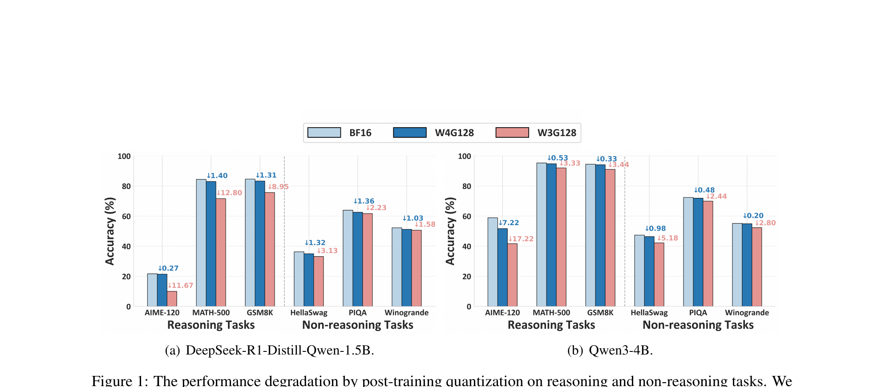
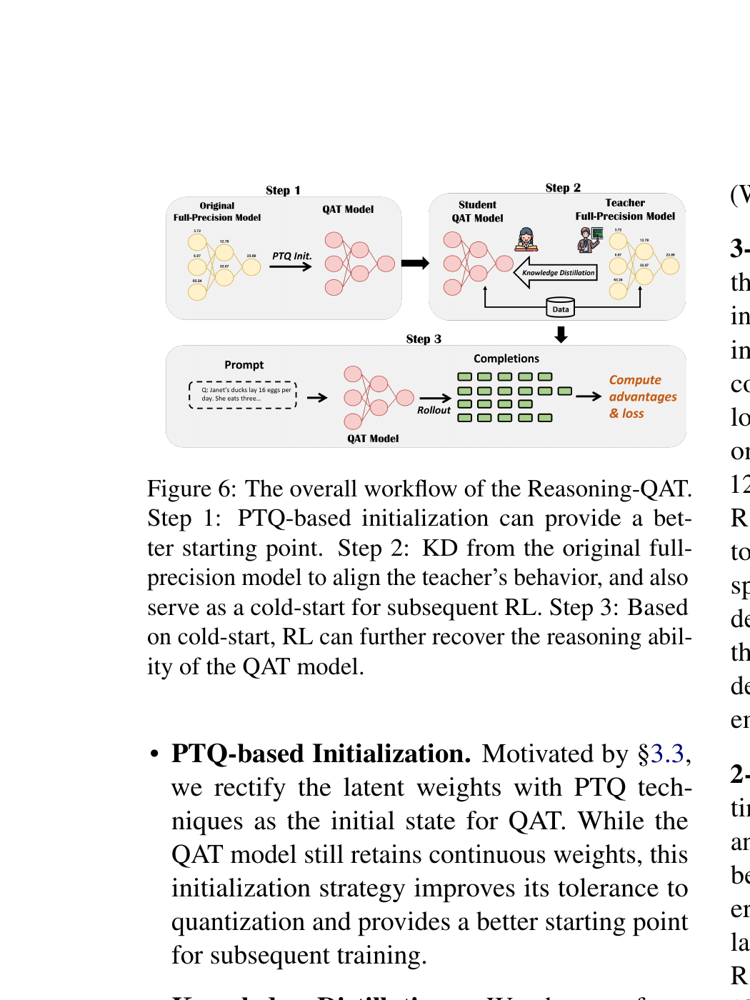

What Makes Low-Bit Quantization-Aware Training Work for Reasoning LLMs? A Systematic Study
TL;DR
- 문제: Reasoning LLM을 3-bit/2-bit 같은 극저비트로 PTQ (Post-Training Quantization)하면 reasoning 벤치마크에서 심각한 성능 하락이 발생한다 (예: AIME-120에서 11.67%↓, MATH-500에서 12.80%↓). 일반 NLP 태스크보다 reasoning에서 하락이 훨씬 크다.
- 해결: QAT (Quantization-Aware Training)의 핵심 요인 4가지를 체계적으로 분석하고, 이를 통합한 Reasoning-QAT 워크플로우를 제안한다: PTQ 초기화 → Knowledge Distillation → Cold-start RL (GRPO).
- 왜 작동하는가: KD는 soft label로 uncertainty 구조를 보존하여 hard-label SFT보다 안정적이고, PTQ 초기화는 더 나은 출발점을 제공하며, KD로 viable policy를 확보한 뒤 RL을 적용하면 추가 개선이 가능하다.
- 비유: 심하게 손상된 그림(극저비트 양자화)을 복원할 때, 먼저 AI 보정(PTQ)으로 윤곽을 잡고, 원본을 참고하며 채색(KD)한 뒤, 세부 터치(RL)로 완성하는 3단계 복원 과정과 같다.
핵심 기여 (Key Contributions)
- 체계적 실증 연구: Reasoning LLM의 QAT에 영향을 미치는 4가지 핵심 요인(학습 목표, PTQ 초기화, RL 통합, 학습 데이터)을 체계적으로 분석한 최초의 연구
- KD 우위 발견: Knowledge Distillation이 SFT-trained 모델과 RL-trained 모델 모두에서 SFT보다 일관적으로 우수한 QAT 목표 함수임을 실증
- Cold-start RL 패턴 발견: 극저비트 양자화 모델에 직접 RL을 적용하면 붕괴하지만, KD cold start 후 RL을 적용하면 추가 성능 향상이 가능함을 발견
- Reasoning-QAT 워크플로우: 위 발견들을 통합한 3단계 워크플로우로, Qwen3-0.6B에서 GPTQ 대비 MATH-500 44.53% 개선, 2-bit에서도 유의미한 성능 회복 달성
1. 배경: PTQ의 한계와 연구 동기
Quantization 기본 개념
Quantization은 BF16 모델 파라미터 $W$를 저비트 정수 표현 $W_{\text{int}}$로 변환하는 기법이다:
$$W_{\text{int}} = \text{clip}\left(\left\lfloor \frac{W}{s} \right\rceil + z, Q_{\min}, Q_{\max}\right) \tag{1}$$여기서 $s$는 scaling factor, $z$는 zero point이다. Symmetric quantization에서는 $s = \frac{\max(|W|)}{2^{N-1}-1}$, $z=0$이다. Forward pass에서 저비트 가중치는 $\hat{W} = s \cdot (W_{\text{int}} - z)$로 dequantize되어 사용된다.
직관적으로 말하면, 연속적인 실수값을 이산적인 정수 격자에 매핑하는 것으로, 비트가 적을수록 격자가 조밀하지 못해 정보 손실이 커진다.
PTQ가 Reasoning에서 특히 취약한 이유
[Figure 1 설명]: DeepSeek-R1-Distill-Qwen-1.5B (좌)와 Qwen3-4B (우)에서 BF16 대비 W4G128/W3G128 양자화 후 성능 하락. Reasoning task (AIME-120, MATH-500, GSM8K)에서 3-bit 하락이 압도적으로 크고, non-reasoning task는 상대적으로 안정적.

Figure 1의 핵심 관찰: 4-bit group-wise weight quantization (group size 128)은 거의 무손실이지만, ##3-bit에서는 reasoning task의 성능 하락이 non-reasoning task보다 훨씬 크다.##
| 모델 | 태스크 유형 | 벤치마크 | 3-bit 하락 |
|---|---|---|---|
| R1-Qwen-1.5B | Reasoning | AIME-120 / MATH-500 | 11.67%↓ / 12.80%↓ |
| Non-Reasoning | Winogrande / Hellaswag | 1.03%↓ / 3.13%↓ |
이는 reasoning이 정밀한 중간 추론 단계에 의존하기 때문으로, 양자화 노이즈가 추론 체인 전체에 누적되어 오류가 증폭된다.
QAT (Quantization-Aware Training)
QAT는 학습 중 저정밀 inference를 시뮬레이션하여 양자화 효과에 적응하는 방법이다. Forward pass에서 fake quantization을 삽입하고, backward pass에서는 양자화가 미분 불가능하므로 Straight-Through Estimator (STE)를 사용한다:
$$\frac{\partial L}{\partial W} = \frac{\partial L}{\partial \hat{W}} \cdot \mathbf{1}(Q_{\min} \leq W/s \leq Q_{\max})$$직관적으로, 학습 중에 "양자화된 척"을 하면서 가중치를 조정하여, 실제 양자화 시 성능 하락을 줄이는 것이다.
2. 체계적 연구: 4가지 핵심 질문
논문은 다음 4가지 연구 질문을 순차적으로 탐구한다:
- RQ1: 어떤 학습 목표(SFT vs KD)가 reasoning QAT에 적합한가?
- RQ2: 저비트 QAT의 학습 효율을 어떻게 개선할 수 있는가?
- RQ3: QAT와 RL (GRPO)은 저비트에서 어떻게 상호작용하는가?
- RQ4: QAT 학습 데이터의 선택이 양자화된 reasoning 성능에 어떤 영향을 미치는가?
실험 설정
- 양자화 설정: W3G128 (3-bit weight-only, group size 128), W2G128 (2-bit), W4A4KV4 (4-bit weight-activation-KV cache)
- 모델: DeepSeek-R1-Distill-Qwen-1.5B (SFT 기반), Qwen3-0.6B / Qwen3-4B (RL 기반)
- 데이터: OpenR1-Math (94k problems), NuminaMath-1.5 (calibration)
- 평가: AIME-120, MATH-500, GSM8K, LiveCodeBench, GPQA-Diamond
- RL: GRPO (Group Relative Policy Optimization) with correctness rewards
- 평가 설정: temperature 0.6, top-p 0.95, max tokens 32,768, 3 random seeds 평균
RQ1: 학습 목표 — KD vs SFT (Table 1)
실험 의도: SFT (hard-label cross-entropy)와 KD (soft-label KL divergence) 중 어떤 것이 양자화된 reasoning 모델의 성능 회복에 더 효과적인가?
| 모델 | 방법 | AIME-120 | MATH-500 | GSM8K | AVG | Drop↓ |
|---|---|---|---|---|---|---|
| R1-Qwen-1.5B (SFT 기반) | BF16 | 21.67 | 84.40 | 84.61 | 63.56 | – |
| SFT | 10.00 | 73.60 | 75.54 | 53.05 | 10.51↓ | |
| KD | 14.44 | 76.20 | 75.87 | 55.50 | 8.06↓ | |
| Qwen3-4B (RL 기반) | BF16 | 58.89 | 95.33 | 94.49 | 82.90 | – |
| SFT | 14.44 | 81.80 | 88.25 | 61.50 | 21.40↓ | |
| KD | 37.50 | 92.00 | 91.43 | 73.64 | 9.26↓ |
핵심 발견:
- ##KD는 SFT/RL 기반 모델 모두에서 SFT보다 우수하며, 특히 RL 기반 모델(Qwen3-4B)에서 격차가 극대화된다## (21.40%↓ vs 9.26%↓)
- KD는 두 paradigm 간 일관적인 drop (8.06% vs 9.26%)을 보이지만, SFT는 RL-trained 모델에서 훨씬 큰 drop (21.40%)
- 가설: KD는 출력 분포를 정렬하여 uncertainty 구조를 보존하므로, hard-label SFT보다 부드러운 학습 신호를 제공한다
RQ2: 학습 효율 — PTQ 초기화 (Figure 2-3)
실험 의도: PTQ (예: GPTQ)로 사전 조정된 가중치로 QAT를 시작하면 학습 효율이 개선되는가?
결과: GPTQ+KD는 RTN+KD 대비 (1) 더 높은 시작점 (test accuracy), (2) 더 낮은 초기 loss, (3) 더 빠른 수렴을 보인다. GPTQ는 Hessian 기반 보상으로 양자화 오차를 사전 최소화하므로, QAT가 더 적은 step으로 수렴할 수 있다.
또한 KD는 SFT 대비 수렴 속도도 빠르다 (Figure 3). 즉, PTQ 초기화 + KD 조합이 학습 효율을 극대화한다.
RQ3: RL 통합 — Cold-start의 필요성 (Table 2)
실험 의도: 극저비트 양자화 모델에 RL을 적용할 수 있는가? 어떤 전제 조건이 필요한가?
| KD | RTN | GRPO | AIME-120 | MATH-500 | GSM8K | AVG |
|---|---|---|---|---|---|---|
| ✓ | 0.83 | 15.00 | 15.39 | 10.41 | ||
| ✓ | ✓ | 1.67 | 15.33 | 15.52 | 10.84 | |
| ✓ | 14.44 | 78.00 | 77.93 | 56.79 |
핵심 발견: ##RTN-quantized 모델에 직접 RL을 적용하면 완전히 붕괴한다 (AVG 10.41 → 10.84).## 양자화 오차가 너무 심해 유효한 출력을 sampling할 수 없어 reward 생성이 불가능하기 때문이다. 반면, KD cold start 후 RL을 적용하면 약 46% 정확도 향상이 가능하다.
RL의 역할 (Figure 4):
- (a) Reward 증가와 response length 감소를 동시에 달성 — 길이 exploitation 방지
- (b) Entropy 감소로 예측 랜덤성을 줄여 양자화 노이즈에 대한 저항력 강화
- (c) Test accuracy 증가와 response length 감소를 동시 달성 — 불필요한 장황함 없는 일반화
RQ4: 학습 데이터 도메인 (Figure 5)
실험 의도: PTQ calibration 데이터와 QAT 학습 데이터의 도메인 일치/불일치가 성능에 미치는 영향은?
4가지 조합 비교: (PTQ calibration, QAT training) = {Wikitext2, NuminaMath} × {Wikitext2, OpenR1-Math}
핵심 발견 3가지:
- 도메인 일치 → 빠른 수렴: numina+openr1 조합이 가장 빨리 수렴
- 도메인 불일치 → 유해한 재조정: numina+wiki는 좋은 초기화에서 시작하지만, Wikitext2 학습 후 급격한 정확도 하락
- Reasoning 도메인 데이터가 최종 성능에 결정적: wiki+wiki는 가장 낮은 최종 정확도
3. Reasoning-QAT 워크플로우
[Figure 6 설명]: Reasoning-QAT의 전체 워크플로우. Step 1에서 PTQ 기반 초기화로 출발점을 마련하고, Step 2에서 원본 full-precision 모델로부터 KD로 성능을 회복하며, Step 3에서 cold-start RL로 reasoning 능력을 추가 강화한다.

4. 실험 결과
3-Bit Weight-only Quantization (Table 3)
| 모델 | 방법 | AIME-120 | MATH-500 | GSM8K | GPQA-D | LCB | AVG | Drop↓ |
|---|---|---|---|---|---|---|---|---|
| Qwen3-0.6B | GPTQ | 0.00 | 13.27 | 23.33 | 26.43 | 0.00 | 12.61 | -28.49 |
| AWQ | 0.00 | 5.20 | 10.01 | 26.77 | 0.00 | 8.40 | -32.70 | |
| R-QAT | 3.89 | 57.80 | 67.02 | 27.78 | 1.87 | 31.67 | -9.43 | |
| R1-Qwen-1.5B | GPTQ | 10.00 | 71.60 | 75.66 | 23.74 | 9.33 | 38.07 | -10.65 |
| AWQ | 3.33 | 48.80 | 65.81 | 37.88 | 4.85 | 32.13 | -16.58 | |
| R-QAT | 16.39 | 79.80 | 79.35 | 30.30 | 10.45 | 43.26 | -5.46 | |
| Qwen3-4B | GPTQ | 34.17 | 90.07 | 91.74 | 38.05 | 20.77 | 54.96 | -15.67 |
| AWQ | 25.00 | 87.00 | 90.07 | 37.88 | 19.03 | 51.80 | -18.83 | |
| R-QAT | 41.11 | 93.47 | 93.48 | 45.79 | 38.06 | 62.38 | -8.25 |
패턴 분석:
- ##Qwen3-0.6B에서 Reasoning-QAT는 GPTQ 대비 AVG 19.06% 개선 (12.61 → 31.67)##, MATH-500에서 44.53% 개선
- 모델 크기가 클수록 BF16과의 gap이 작음: 0.6B(-9.43), 1.5B(-5.46), 4B(-8.25)
- LiveCodeBench는 모든 방법에서 회복이 가장 어려움 — 코드 생성이 양자화에 특히 민감
2-Bit Weight-only Quantization
2-bit은 극도로 도전적인 설정으로, PTQ baseline은 대부분 붕괴한다:
- ##R1-Qwen-1.5B: MATH-500이 GPTQ 3.67% → Reasoning-QAT 55.00%##
- Qwen3-4B: MATH-500 4.80% → 78.27%, AIME-120 0.00% → 22.78%
QAT Baseline 비교 (Table 4)
| 방법 | AIME-120 | MATH-500 | GSM8K | AVG |
|---|---|---|---|---|
| Standard SFT-QAT | 10.00 | 73.60 | 75.54 | 53.05 |
| EfficientQAT | 10.83 | 74.20 | 76.26 | 53.76 |
| BitDistiller | 14.72 | 78.00 | 78.46 | 57.06 |
| Reasoning-QAT | 16.39 | 79.80 | 79.35 | 58.51 |
동일 프로토콜(R1-Qwen-1.5B, W3G128, OpenR1-Math)에서 Reasoning-QAT가 EfficientQAT 대비 +4.75%, BitDistiller 대비 +1.45% 우위.
Ablation Study (Table 5/8)
| Configuration | AIME-120 | MATH-500 | GSM8K | AVG |
|---|---|---|---|---|
| BF16 | 21.67 | 84.40 | 84.61 | 63.56 |
| RTN | 0.83 | 15.00 | 15.39 | 10.41 |
| GPTQ (PTQ init) | 10.00 | 71.60 | 75.66 | 52.42 |
| GPTQ + SFT | 14.17 | 75.53 | 76.12 | 55.27 |
| GPTQ + KD | 13.89 | 78.20 | 77.26 | 56.45 |
| GPTQ + KD + GRPO | 16.39 | 79.80 | 79.35 | 58.51 |
각 단계의 incremental 기여: RTN→GPTQ 초기화(+42.01%), GPTQ→GPTQ+KD(+4.03%, SFT 대비 KD의 추가 개선은 +1.18%), GPTQ+KD→GPTQ+KD+GRPO(+2.06%). 최종 워크플로우는 BF16 대비 -5.05% gap까지 축소.
W4A4KV4 설정 (Appendix A.3)
Weight-activation 양자화(W4A4KV4)에서도 FlatQuant 초기화를 사용하여 Reasoning-QAT를 적용. Qwen3-4B에서 FlatQuant 58.28% → Reasoning-QAT 60.78%. FlatQuant의 layer-wise correction을 network-wise QAT로 확장하여 양자화 오류의 layer 간 전파를 보상한다.
QuaRot 전이 실험 (Table 12-13): W4A4KV4에서 QuaRot 초기화 시 KD는 성공적으로 성능을 개선하지만, 이후 RL 학습은 붕괴한다 — QuaRot의 base capability가 RL을 유지하기에 불충분하기 때문이다. 또한 RTN 초기화로 W4A4 QAT를 시도하면 학습이 완전히 붕괴한다. 이는 ##"strong PTQ initialization이 RL의 전제 조건"##이라는 핵심 주장을 추가로 뒷받침한다.
General Domain 성능 유지 (Table 10)
Reasoning-QAT가 non-reasoning 벤치마크(HellaSwag, PIQA, Winogrande)에서도 PTQ baseline과 동등하거나 약간 나은 성능을 유지한다. 예를 들어 R1-Qwen-1.5B에서 PIQA가 +2.45% 개선되었다. 이는 reasoning-focused QAT가 general capability를 해치지 않음을 보여준다.
5. 비판적 분석
강점
- 체계적 접근: 4가지 연구 질문을 독립적으로 분리하여 각 요인의 효과를 명확히 밝힘. Ablation이 충분히 상세함
- 다양한 모델 커버리지: SFT 기반 (R1-Qwen-1.5B)과 RL 기반 (Qwen3-0.6B, 4B) 모두 검증
- 실용적 가이드라인: 새 알고리즘 제안이 아닌, 기존 기법의 최적 조합을 제시하므로 즉시 적용 가능
- 3 random seeds 평균 보고: 결과의 신뢰성 확보
한계 및 질문
- 수학 중심 데이터: 학습/평가 모두 수학 위주. 코딩(LiveCodeBench)이나 과학(GPQA) 도메인으로의 일반화가 제한적 — 특히 작은 모델에서 LiveCodeBench 성능 회복이 거의 없음
- Empirical study의 한계: 새로운 양자화 기법을 제안하지 않고 기존 방법(GPTQ, KD, GRPO)의 조합만 탐색한다. 최적 조합이 향후 새로운 기법이 등장하면 달라질 수 있다
- 소규모 모델만 실험: 최대 4B. 7B, 14B, 70B 모델에서 동일 패턴이 유지되는지 불확실
- 학습 비용 미보고: QAT + RL의 실제 GPU hours, 메모리 사용량이 명시되지 않아 PTQ 대비 실용성 판단 어려움
- Inference 속도 미검증: 양자화의 궁극적 목표인 inference 가속 (latency, throughput)이 보고되지 않음
- KD의 teacher 의존성: KD는 full-precision teacher가 필요하므로, teacher를 배포할 수 없는 환경에서는 적용 어려움
6. Key Takeaways
- Reasoning LLM 양자화는 일반 LLM보다 훨씬 어렵다: 3-bit에서 reasoning task의 하락이 non-reasoning 대비 3~4배 크다. 4-bit 이하에서는 PTQ만으로는 불충분하다.
- KD > SFT for QAT: Soft label이 양자화된 모델의 uncertainty 구조를 보존하는 데 핵심적이다. 특히 RL-trained 모델에서 SFT는 크게 실패하지만 KD는 안정적이다.
- PTQ → KD → RL 순서가 중요하다: 각 단계가 다음 단계의 전제 조건이 되는 의존성 구조. 직접 RL 적용은 붕괴를 유발한다.
- 도메인 일치가 수렴을 가속한다: PTQ calibration 데이터와 QAT 학습 데이터의 도메인이 일치해야 안정적이고 빠른 학습이 가능하다.
- 실무 적용 시: Reasoning LLM을 극저비트로 배포해야 할 때, 이 3단계 워크플로우를 참고할 수 있다. 다만, 수학 외 도메인에서는 추가 검증 필요.